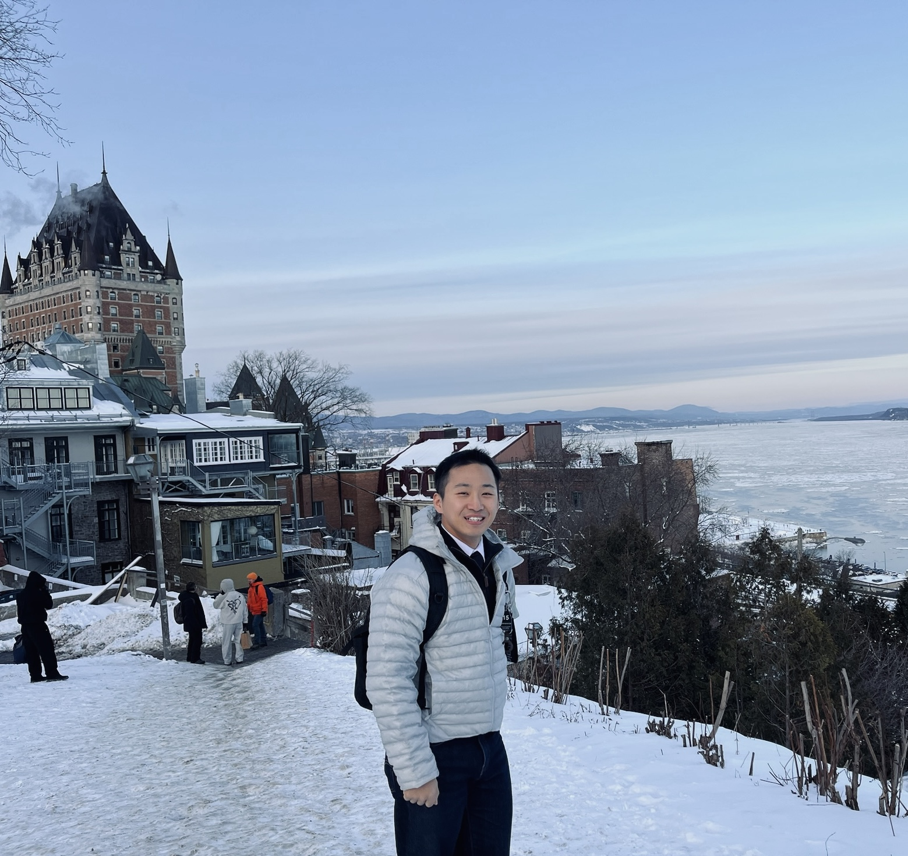

Dongsu Lee
Hello! I am a PhD student at the University of Texas at Austin, where I’m supervised by Prof. Amy Zhang in the MIDI Lab. Previous affiliation. I collaborated with Prof. Ding Zhao in the Safe AI Lab, Carnegie Mellon University (CMU); with Prof. Minhae Kwon in the BMIL; and Prof. Sangsoo Kim in the Post-genome Informatics Lab at Soongsil University in Seoul, South Korea.
I’m interested in realistic RL problems, e.g, partial observability, coordination with unseen partners, and human-robot collaboration. Then, I aim to make an RL algorithm applicable in via both self-play and data-driven techniques.
I am always happy to talk about research, so feel free to reach out if you want to chat!